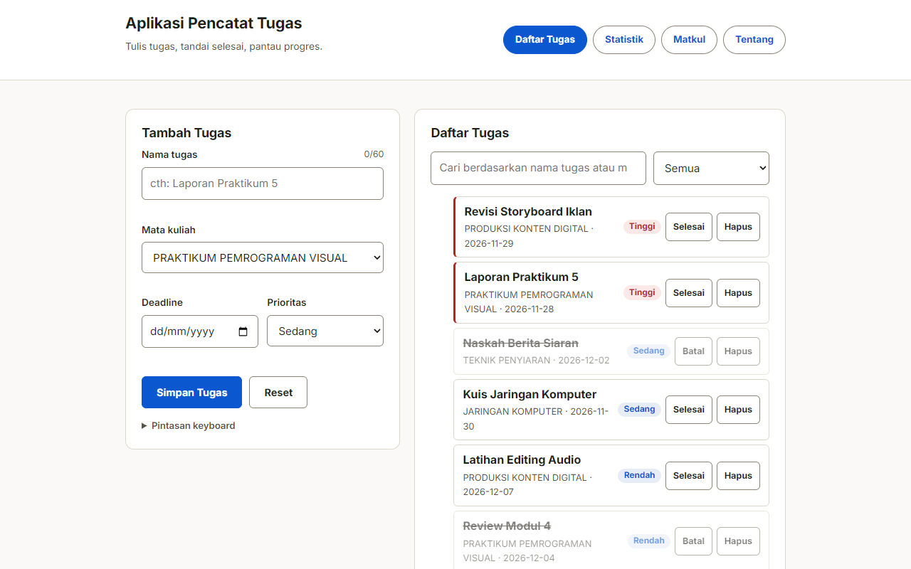
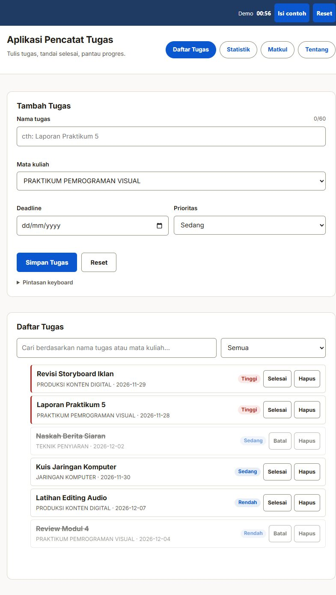
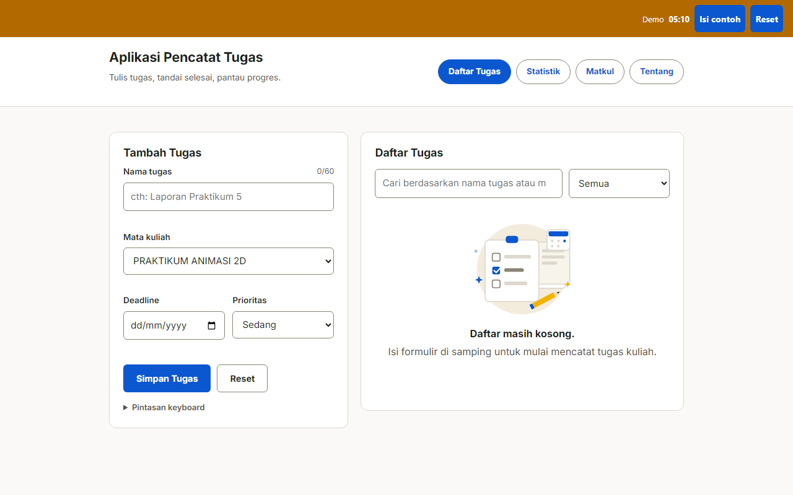
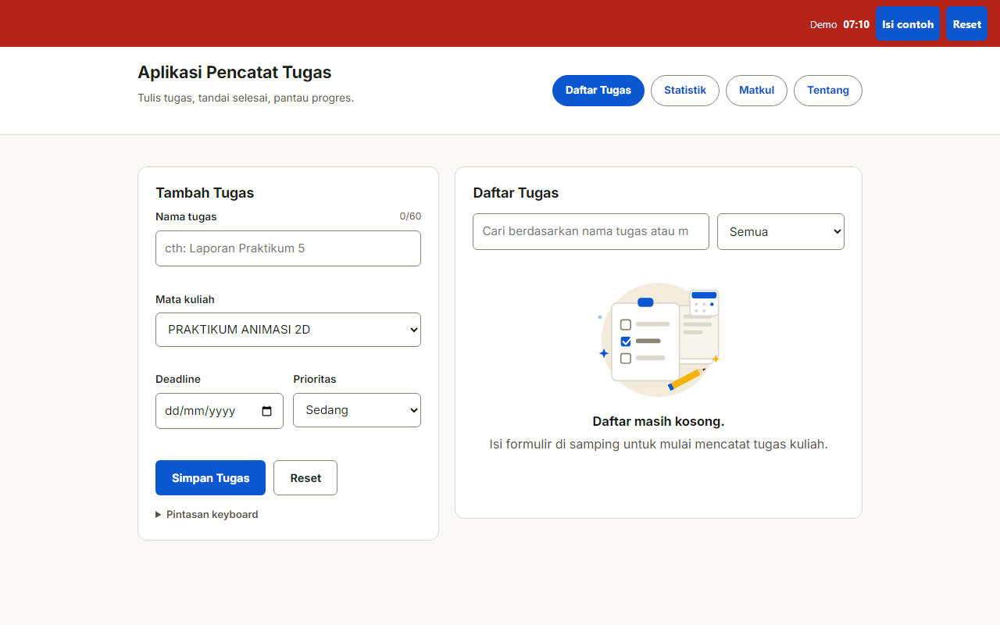

Demo Akhir P14 · Praktikum Pemrograman Visual · TB033109
01 / 10
TugasKu
Pencatat tugas kuliah tanpa akun. Catat, tandai selesai, dan lihat progres dari satu halaman.
Iqgam Afrizal5125500042Kelas3 D3 MM BDosenAji Sapta Pramulen, S.T., M.T.Tanggal27 November 2026

Repositori Project Akhirgithub.com/sayarizal501/ppv-project-akhir-5125500042 · tag v1.0.0
01 · Masalah dan pengguna
02 / 10
Deadline tersebar di tiga tempat.
01
Chat kelas
Informasi tugas dan perubahan tenggat bercampur dengan obrolan lain.
02
Chat kelompok
Pembagian tugas kelompok dicatat di percakapan yang berbeda.
03
Kertas dan catatan
Catatan cepat tidak terbaca lagi saat minggu sibuk.
Akibatnya ada tugas yang terlewat dan prioritas tertukar. Yang dibutuhkan satu tempat untuk melihat sisa tugas, bukan aplikasi yang menambah akun dan lapisan baru.
Persona: Azcanio Almere, 20 tahun, mahasiswa semester 3 dengan 12 mata kuliah dan satu kepanitiaan.
Masalah dari charter P09, dipertajam di Tugas 7/P1312 MK · 3 kanal · 1 tempat
02 · Produk dan alur
03 / 10
Satu halaman, empat langkah.
01
Catat tugasNama, mata kuliah, deadline, prioritas. Target ≤30 detik dan ≤6 interaksi.
02
Tandai selesaiSatu klik, langsung tersimpan. Bisa dibatalkan.
03
Cari dan saringBerdasarkan nama, mata kuliah, status, atau prioritas Tinggi.
04
Lihat statistikPersentase dan jumlah tugas yang sudah selesai.
Daftar Tugas: formulir di kiri, daftar dan pencarian di kanan.
Tanpa akun · data di localStorage · tetap ada setelah reload · berjalan dari server statis.
Empat tampilan: Daftar, Statistik, Matkul, TentangBootstrap 5.3.3 · ES Modules
03 · Demo langsung
04 / 10
Demo dimulai dari data yang sama.

Kit demo aktif hanya dengan ?demo=1.
01
Isi contohEnam tugas, dua selesai. Statistik langsung 33%.
02
ResetMenghapus data demo agar latihan dan demo di kelas identik.
03
Pengatur waktuOranye di menit ke-5, merah di menit ke-7.

05:10 · oranye

07:10 · merah
Uji timer memakai Chrome headless dengan waktu virtual5-7 menit · rencana cadangan 60 detik
Hanya modul ini yang membaca dan menulis localStorage. Aturan penyimpanan tidak tersebar.
02
Tidak pernah melempar galat
JSON rusak, data bukan array, atau penyimpanan diblokir menghasilkan daftar kosong dan pesan.
03
Kunci berversi dan migrasi
Data lama di kunci tugas/matkul dipindah sekali ke v1, lalu dihapus.
04
Mudah diganti ke server
Untuk seribu pengguna, cukup isi modul ini dengan panggilan API. Modul lain tidak berubah.
Alasan desain: keselamatan data dan batas modulDiuji dengan JSON rusak dan kuota penuh (P12)
05 · Uji usability
06 / 10
Dua penguji, dua temuan, keduanya diperbaiki.
Penguji
Temuan
Angka
Perbaikan
Fara
Mengira menu "Daftar" adalah pendaftaran akun.
40 detik berhenti di menu
Label diganti "Daftar Tugas".
Nio
Sulit membedakan prioritas Tinggi dan Sedang saat tugas banyak.
50 detik mencari
Tinggi diurutkan di atas dan diberi garis merah.
2/2temuan diperbaiki dan diuji ulang
40-50detik waktu berhenti sebelum perbaikan
0galat Console di alur utama setelah perbaikan
Sumber: laporan Tugas 4, pengujian Fara dan Nio pada 10 Oktober 2026. Peserta diminta menambah lalu menandai selesai satu tugas tanpa didampingi.
Uji P14 dengan 3 pengguna: protokol tersedia di docs/UJI_USABILITY_P14.mdCharter: minimal 2 dari 3 berhasil tanpa dibantu
06 · Perbaikan
07 / 10
Yang berubah setelah uji.
"Daftar"
→
"Daftar Tugas"
Fara berhenti 40 detik karena mengira menu itu pendaftaran akun. Setelah label diganti, penguji langsung paham tanpa bertanya.
Prioritas bercampur
→
Tinggi di atas + garis merah
Nio membutuhkan 50 detik untuk menemukan tugas mendesak. Setelah urutan dan penanda diperbaiki, tugas Tinggi ditemukan tanpa mencari.
Perbaikan lain dari uji sprint: data localStorage rusak tidak mematikan halaman, kuota penuh tidak melempar galat, dan teks pengguna ditampilkan lewat textContent, bukan HTML.
Bukti: docs/BUGS.md dan docs/DEBUG_LOG.mdConsole bersih di alur tambah, selesai, cari, statistik, hapus
Satu peramban, satu perangkat. Tidak ada sinkronisasi.
Kuota sekitar 5 MB per origin. Daftar panjang bisa gagal simpan.
Tidak ada cadangan; data hilang saat data peramban dibersihkan.
Tidak ada login, jadi tidak ada kepemilikan data per pengguna.
Browser
→
API
→
Basis data
Rencana: pindahkan data ke API dan basis data, tambahkan autentikasi, lalu sediakan ekspor/impor JSON. Karena hanya storage.js yang menyentuh penyimpanan, modul lain tidak perlu dibongkar.
Halaman statis tetap sanggup melayani seribu pengguna. Yang belum siap adalah penyimpanan dan sinkronisasinya.
Yang pertama rusak: data pengguna terpisah dan tidak bisa dipulihkan, bukan halaman webnya.
Batas versi ini: web statis, satu pengguna per browserEkspor/impor JSON berstatus Should, belum dibuat
09 · Cadangan dan penutup
10 / 10
Rencana cadangan.
01
Rekaman 60 detik
Alur utama dari Isi contoh sampai Statistik. Berkas docs/video/demo-cadangan-60detik.mp4.
02
Server lokal
Aplikasi dijalankan lewat jalankan.bat, bukan klik dua kali. Bootstrap disalin lokal bila internet kelas bermasalah.
03
Data dan versi
Repo dengan tag v1.0.0, PDF slide, dan rekaman disimpan di satu folder.
04
Latihan
Dua kali latihan dengan timer kit demo, lalu Reset agar demo di kelas mulai dari keadaan yang sama.